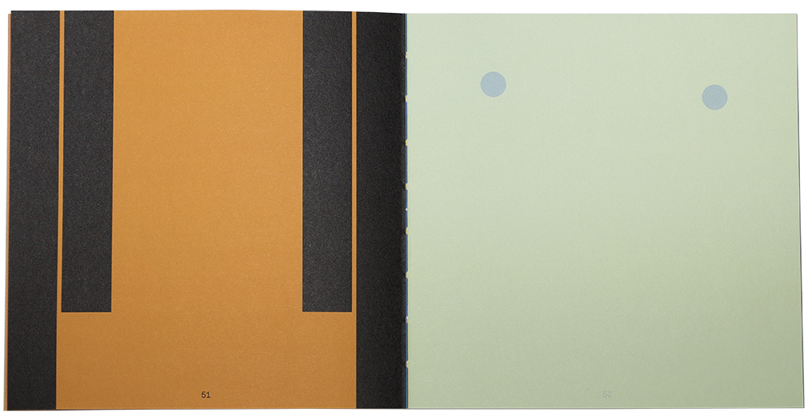
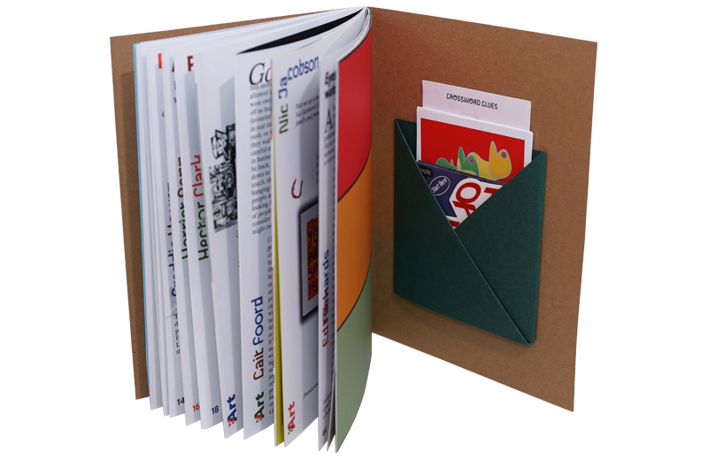
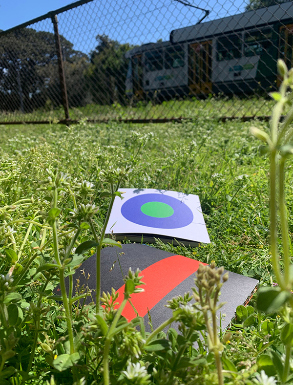
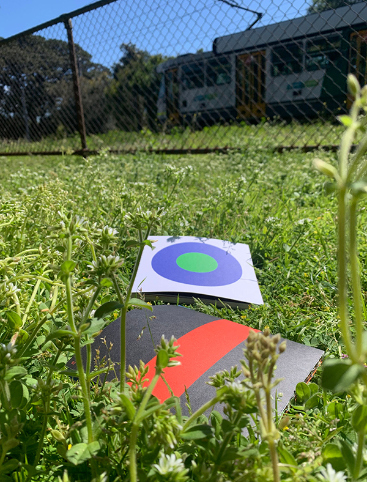

Edition of 150
Exposed section sewn bind
Published by: Post Office Lane
Look Book presents a series of two-colour geometric abstractions that explore the subjective nature of looking and seeing. These simplified compositions depict relatively everyday things as seen from unfamiliar macro-perspectives, asking readers to look at things from a different angle. The compositions examine the construction of the visual world, perspective and abstraction, encouraging individual subjective interpretation.

Edition of 150
Designed with: Angus Brown
Produced by: Good One Creative
Pick Me Up magazine is mad about Melbourne. For its first edition, an array of local contributors were asked how the title translates to them - what picks them up? The mag features flips, tri-folds, pockets, postcards, concertinas, crosswords, colouring and more, asking that the reader actively engages in the physical experience.

Edition of 300
Art director: Ayesh Weerawardena
Produced by: Good One Creative
Editorial and chapter break design for Pick Me Up 02. This edition of Pick Me Up focuses on local creativity, initiative and enterprise - supporting projects and sparking new ones. The design takes its colour palette from the mag’s first edition, and features bold chapter breaks along with unique graphic interventions for each article title.
Written by: Dan Monheit
Designed with: Good One Creative
Covers and illustrations: Charlie Howcroft
The Why, The Book is a publication by behavioural Science expert and CEO of Hardhat, Dan Monheit. Dan answers thirty questions about weird yet relatable everyday human behaviours, detailing key learnings and creative solutions designed to help businesses and marketers. The design appears curious and inquisitive, playing into the obscurity of the questions being asked. The colour palettes and title fonts alternate between chapters.
Graphic design: Oly King
Co-creative directors: Angus Brown and Oly King
Post Office Lane is a multidisciplinary publishing studio that looks to expand the meaning of publishing. Our collaborative projects focus on creating physically involved visual experiences, and include artist books, printed editions and public works of all kinds. We pride ourselves on our love for the DIY in publishing and the emphasis our works have on tangibility.
 


Guidance: Dominic Hofstede
Structural reference: MPavilion 2015
Canopies is a display font inspired by the design of the 2015 MPavilion (designed by AL_A). The font draws reference from the innovative structure and material use of the pavilion, intended to feel futuristic and technocentric. Each letter is made from various curved modules connected by thin bridging strokes, reflecting the tall stems and translucent petal canopy of structure.
1. Post Office Lane Publishing
2. Bung Brain Recordings
3. Poppy Health
4. Cybernet
5. Pick Me Up Mag
Contributors: Ayesh Weerawardena, Euan Thomas, Oly King
Mothers Club Creative is a collaborative space for open graphic experimentation. We mainly produce posters exploring methods of digital design and collaboration. In such a client-driven industry as design, we think it is important to continue to play and have fun with others. At Mothers Club, both thinking and a lack thereof is always encouraged.

Designed with: Ayesh Weerawardena and Euan Thomas
EP artwork for Melbourne-based producer Fixt Focus.
Designed with: Ayesh Weerawardena
Single artwork for Melbourne-based producer Fixt Focus.
Spotify and Soundcloud banner for Melbourne-based trance producer Cybernet.
An interactive installation exploring the influence that shadows have on our perception. “POC” allows people to pause, observe and reflect, hoping to inspire a greater connection to and appreciation for our surroundings. The installation comprises of 27 hand-made hybrid letter sculptures, projecting three different composite shadows from three separate angles.

Created with: Angus Brown and Ayesh Weerawardena
Collaborative video work for our exhibition 'In Yo Face' at Intermission Gallery, 2019. The video explores the playful relationships between each of our figurative styles and was originally installed as a wall projection in the gallery space.
Created with: Angus Brown and Ayesh Weerawardena
Collaborative video work for our online exhibition 'Spring Gets Sprung' at Intermission Gallery, 2020. The video celebrates our collective love for Spring in Melbourne during a time where we could barely go outside. The video brings together DSLR and iPhone footage, iPhone sound recordings and laptop screen recordings.